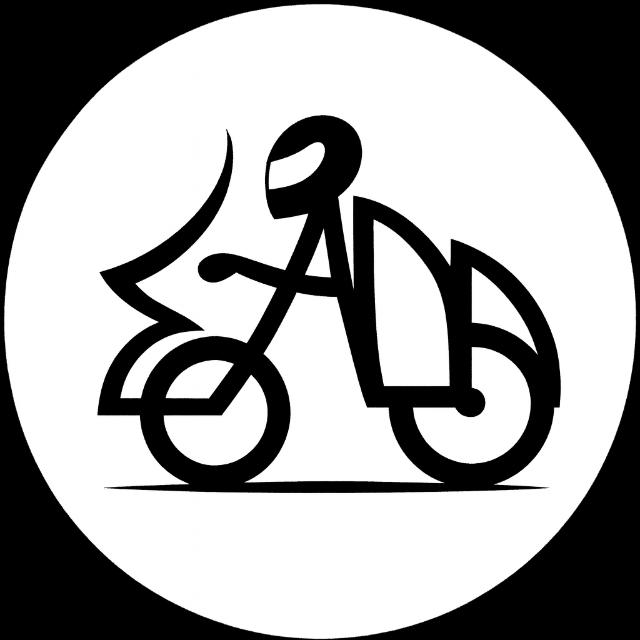

ΣΑΔΛ
Σωματείο Ανεξάρτητων Διανομέων Λάρισας
Αρχική
Καταστατικό
Ανακοινώσεις
Ανακοινώσεις
Έτος
Όλα
2026
2025
Μήνας
Όλοι
Ιανουάριος
Φεβρουάριος
Μάρτιος
Απρίλιος
Μάιος
Ιούνιος
Ιούλιος
Αύγουστος
Σεπτέμβριος
Οκτώβριος
Νοέμβριος
Δεκέμβριος
Αναζήτηση
Καθαρισμός
Φίλτραρε τις ανακοινώσεις ανά έτος/μήνα ή κάνε αναζήτηση.
🗂️ Αρχεία: Google Docs / PDF / Word
Παράδειγμα ανακοίνωσης #1
Ημερομηνία: 12/02/2026
Εδώ γράφεις 2-3 γραμμές περιγραφή για την ανακοίνωση.
Άνοιγμα στο Google Docs
Παράδειγμα ανακοίνωσης #2
Ημερομηνία: 20/02/2026
Αν το αρχείο είναι PDF στο Drive, πάλι βάζεις το link εδώ.
Άνοιγμα αρχείου
Παράδειγμα ανακοίνωσης #3
Ημερομηνία: 01/03/2026
Κάθε ανακοίνωση είναι ένα πλαίσιο. Πολύ εύκολο update.
Διαβάστε
Αν θέλεις, μπορώ να σου βάλω και “Αρχείο Ανακοινώσεων” (μήνες/έτη) ή αναζήτηση.